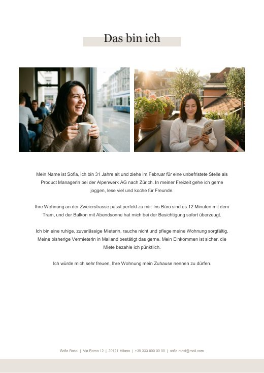
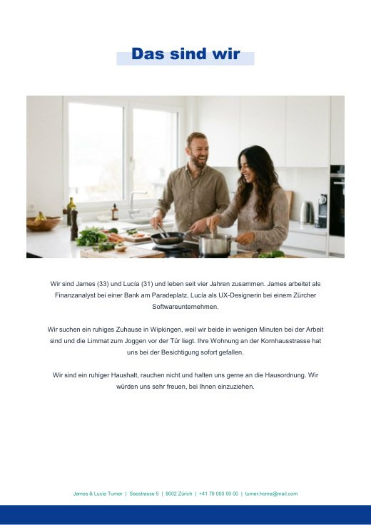

Tu piso en Zúrich. Sin 100 rechazos.
En Zúrich, los propietarios eligen la solicitud completa, según el estándar suizo, que llega primero. Nuestro kit te da la plantilla de dossier, cartas en alemán listas para usar y una estrategia de búsqueda local. Solicita como un local desde el primer día.
Los expats no pierden pisos por el sueldo. Los pierden por el papeleo.
Documentos que faltan, sin alemán y mal momento. Resolvemos los tres.
Cartas en alemán que suenan locales
Breves, personales y con estilo suizo. Los propietarios notan el esfuerzo, y te pone por delante de la mayoría de los expats.
Sehr geehrte Frau Meier
Mit grossem Interesse habe ich Ihr Inserat gelesen. Ich bin Software-Ingenieur bei einem Zürcher Tech-Unternehmen und ziehe im März mit meiner Partnerin nach Zürich.
Die Wohnung gefällt uns besonders wegen der Nähe zum
Listo en una tarde
De la hoja en blanco a un dossier completo, listo para la administración, con nuestras plantillas.
Dossier estándar suizo
Extracto de deudas (Betreibungsauszug), permiso, nóminas y referencias, en el orden que esperan las administraciones de Zúrich.
Hecho por locales
Creado por personas que crecieron en Zúrich y escriben candidaturas de forma profesional. Todo probado con anuncios reales de Zúrich.
¿No te ayuda? Te devolvemos el dinero, sin preguntas.
Saber dónde buscar
El centro es lo más difícil. Te mostramos los barrios donde tienes opciones reales y un trayecto corto.
Tres pasos hasta tus llaves.
De «¿por dónde empiezo?» a tu primera solicitud en una tarde.
Descarga el kit
Acceso inmediato tras el pago. Plantillas, guía y checklists en tu idioma.
Completa tu dossier
Sigue la guía paso a paso. Tu dossier estándar suizo estará listo en unas 3 horas.
Solicita primero
Elige una plantilla de carta en alemán, añade 2–3 frases personales y solicita el mismo día de la visita.
Un dossier que los propietarios recuerdan.
Tres diseños listos: añade tus fotos, completa los campos, exporta a PDF. Además, la guía paso a paso, las cartas en alemán y las plantillas de e-mail.






Dossiers de ejemplo con personas ficticias. Tu dossier, tus fotos.
Sé el primero. No el 101.
Muchas cooperativas y administraciones de Zúrich publican los pisos libres solo en su propia web, y desaparecen en pocos días. Revisamos estas fuentes cada día y te enviamos un breve resumen con enlace directo.
- ✓Filtros por barrio, habitaciones y alquiler máx.
- ✓Un e-mail breve al día en tu idioma
- ✓Requisitos explicados (residencia, alemán, socio)
- ✓CHF 9 al mes, cancela cuando quieras
Evita las pujas. Busca con cabeza.
Estos barrios están cerca y tienen mucha menos competencia que el centro. Tiempos hasta Zúrich HB aproximados.
¿Cuánto alquiler puedes pagar?
La mayoría de los propietarios en Zúrich quiere que el alquiler no supere un tercio de tus ingresos brutos.
Tus ingresos al mes, antes de impuestos.
Precios simples y honestos.
Sin llamadas, sin comisión, sin costes ocultos. Hazlo tú con el kit o déjanos toda la búsqueda.
Apartment Alerts
Para quien busca por su cuenta- E-mail diario con pisos nuevos de cooperativas & administraciones
- Tus filtros: barrio, habitaciones, alquiler
- Checklist de solicitud gratis
Zurich Apartment Kit
Todo para solicitar- Plantilla de dossier estándar suizo (Word)
- Cartas en alemán para solteros, parejas, familias y recién llegados
- Plantillas de e-mail: pedir visita, seguimiento, tras un rechazo
- Guía de barrios + glosario de alquiler alemán–español
- Actualizaciones gratis si cambian las normas o los alquileres
Full Search Support
Nosotros buscamos, tú eliges- Todo el Apartment Kit
- Preparamos tu dossier y escribimos cada carta
- Revisamos cada día los anuncios nuevos por ti
- Reunión personal en Zúrich
- Soporte prioritario por e-mail & WhatsApp
¿Qué incluye exactamente el kit?
Una guía paso a paso, una plantilla de dossier estándar suizo, plantillas de cartas en alemán para distintas situaciones (soltero, pareja, familia, recién llegado), plantillas de e-mail para administraciones, una checklist de visita, una guía de barrios y un glosario de alquiler.
No hablo alemán. ¿Puedo usarlo?
Sí. Cada plantilla en alemán viene explicada en español, y solo añades 2–3 frases personales.
¿Me garantizáis un piso?
Nadie puede garantizarlo honestamente, porque decide el propietario. El kit te convierte en uno de los candidatos más fuertes. Si no te ayuda, te devolvemos el dinero en 14 días.
Aún no estoy en Suiza. ¿Me sirve?
Es el mejor momento. Preparas tu dossier antes de llegar y solicitas desde el primer día.
¿Qué es un «Betreibungsauszug»?
Un extracto del registro de deudas que demuestra que no tienes deudas pendientes. Casi todos los propietarios lo piden. El kit explica cómo conseguirlo, aunque acabes de llegar.
¿Puede pagarlo mi empresa?
A menudo sí. Muchas empresas tienen un presupuesto de reubicación. Recibes una factura en regla.
¿Listo para encontrar tu hogar en Zúrich?
Consigue el Zurich Apartment Kit, o empieza con la checklist gratis.